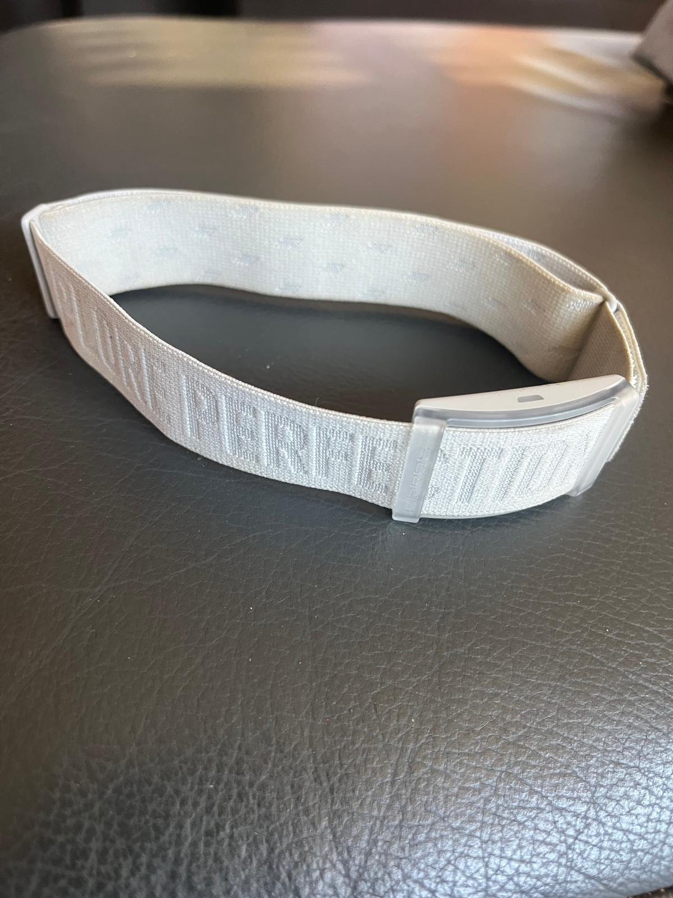
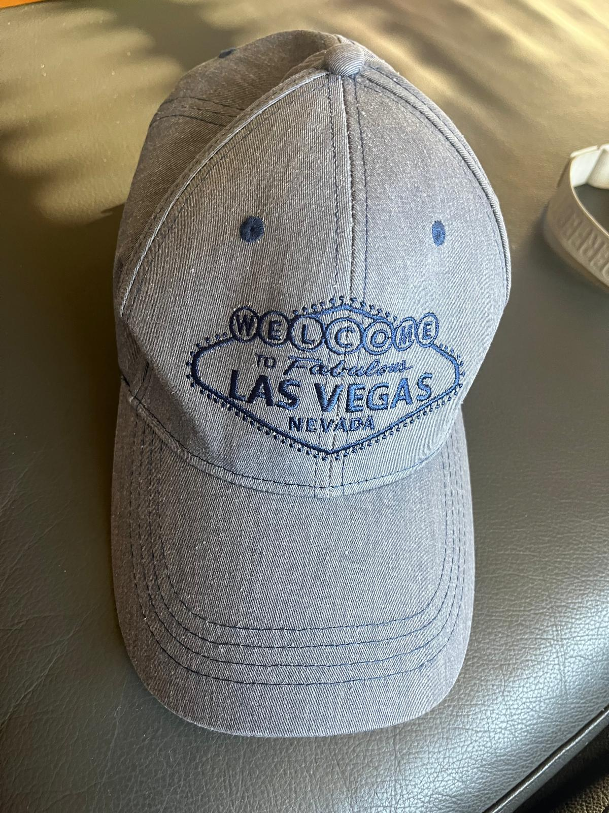

Es war ein toller Abend am Stausee. Alle Ergebnisse ansehen → · Galerie ansehen →
Folgende Gegenstände wurden nach dem Lauf gefunden. Bei Fragen bitte melden unter leichtathletik@tsv-bw.de.


Flache, landschaftlich schöne Strecke entlang der Wertach
Dabei
- Wasser & Kuchen
- Siegerehrung
- Finisher-Urkunde
- Startnummern-Verlosung im Ziel
Hinweise
- Parkplätze in Start- und Zielnähe
- Keine Duschmöglichkeit vor Ort
- Nur Online-Anmeldung möglich
- Anmeldeschluss ca. 30 Min. vor Start
Häufige Fragen
Warum wurde die Strecke geändert?
Durch das Unwetter vor einigen Wochen liegen mehrere Bäume auf der Runde um den Stausee und blockieren den Weg. Da die Strecke bis zum Wettkampftag nicht freigegeben werden kann, weichen wir auf eine Ersatzstrecke entlang der Wertach aus. Start & Ziel bleiben am Seglerheim am Stausee. Die neue Streckenlänge beträgt 3,5 km (1 Runde) bzw. 10,5 km (3 Runden). Zur neuen Streckenkarte →
Ich habe keine Meldebestätigung per E-Mail erhalten – bin ich trotzdem angemeldet?
Beim Bezahlen hast du einen Hinweis erhalten, dass du angemeldet bist. Wenn das Startgeld abgebucht wurde, bist du dabei. Deinen Namen findest du in der Teilnehmerliste, die alle paar Stunden aktualisiert wird.
Wie und wo bekomme ich meine Startnummer?
Die Startnummer erhältst du direkt am Start- und Zielbereich. Bitte spätestens 30 Minuten vor dem Start abholen.
Bis wann kann ich mich anmelden?
Du kannst dich bis 1 Stunde vor dem Start selbstständig online anmelden. Eine Anmeldung durch den Veranstalter ist nicht möglich.
Kann ich das Startgeld bar bezahlen?
Nein, Barzahlungen werden nicht akzeptiert. Die Bezahlung erfolgt ausschließlich online.
Sind Umkleideräume vorhanden?
Es gibt einen gemeinsamen Umkleideraum für Männer und Frauen.
Wo kann ich nach dem Lauf duschen?
Duschen stehen vor Ort leider nicht zur Verfügung.
Gibt es Toiletten?
Ja, Toiletten sind vorhanden. Vor dem Start können kurze Wartezeiten entstehen.
Wo kann ich meine Zielzeit sehen?
Die Zielzeiten sind auf www.kneipp-run.de abrufbar.
Darf ich einen Hund oder Babyjogger mitbringen?
Nein, Hunde und Babyjogger sind aus Sicherheitsgründen auf der Strecke nicht erlaubt.
Gibt es einen Parkplatz?
Kostenlose Parkplätze befinden sich ca. 300 m vom Start- und Zielbereich entfernt. Parkplatzeinweiser sind vor Ort.
Findet der Schülerlauf statt?
Nein, der Schülerlauf 2026 entfällt leider aufgrund zu geringer Anmeldezahlen. Wir hoffen, ihn in einem der nächsten Jahre wieder anbieten zu können.
Wie finde ich eine Mitfahrgelegenheit zum Lauf?
Über fahrmob – die lokale Mitfahrplattform – kannst du ganz einfach eine Mitfahrt suchen oder selbst eine anbieten. Direkt zur Veranstaltung: fahrmob.eco
Was ist mit dem kostenlosen Küchenbuffet gemeint?
Für alle Finisher bieten wir ein Stück Kuchen an.